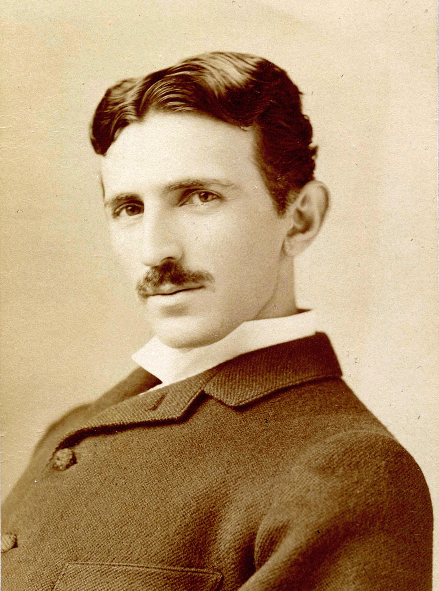
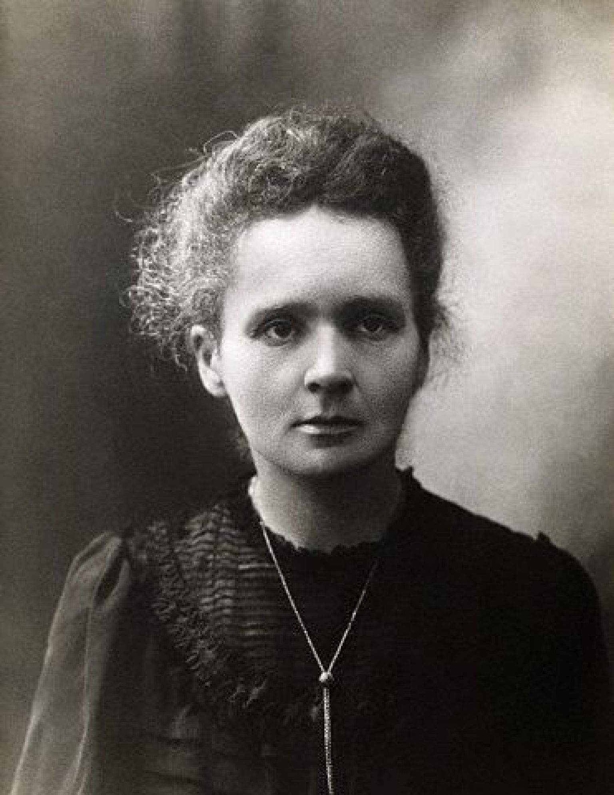
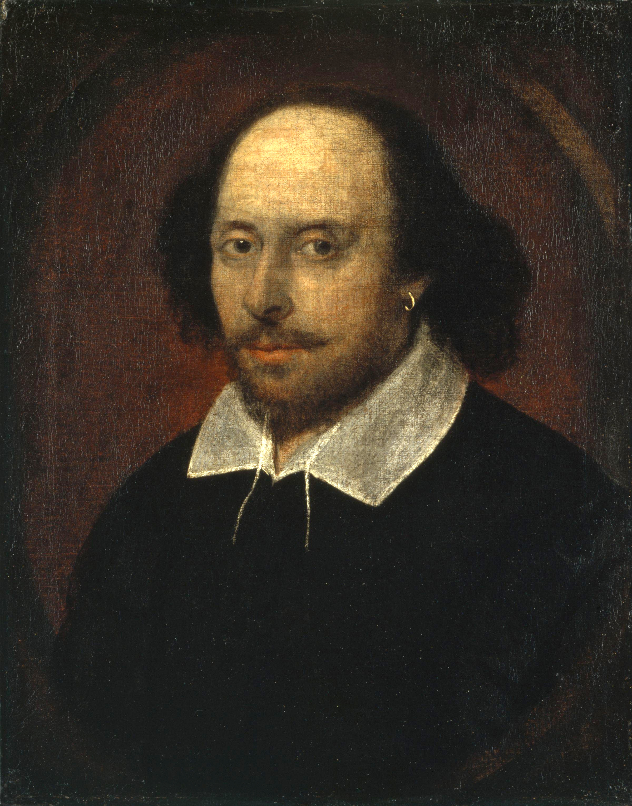
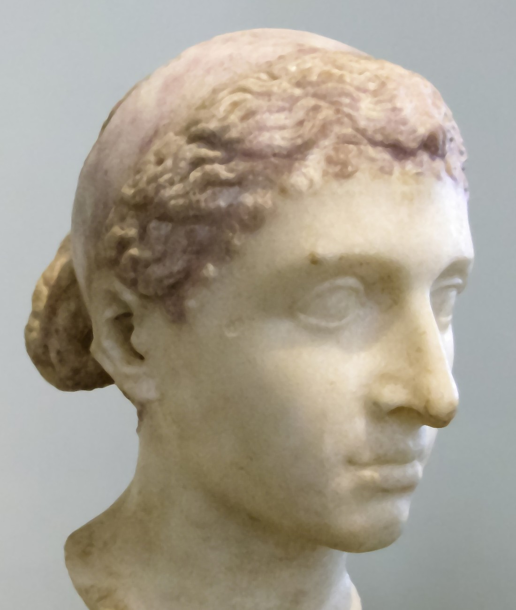
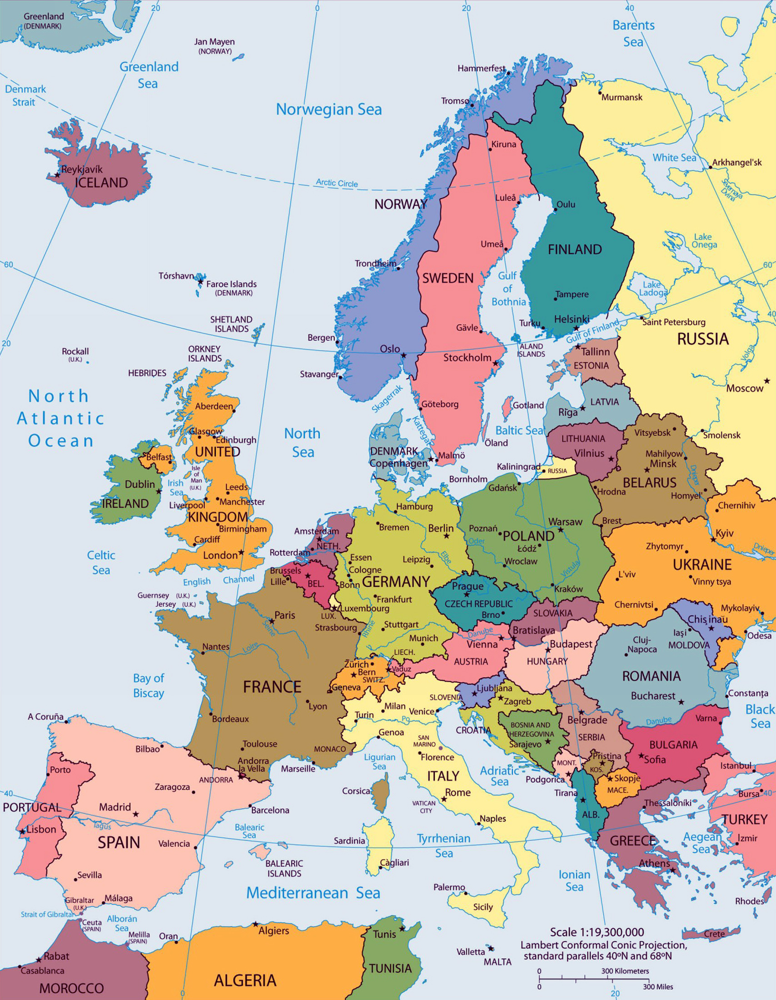

O našoj metodologiji
Podaci su prikupljeni iz provjerenih istorijskih arhiva i enciklopedija.
Podaci su prikupljeni iz provjerenih istorijskih arhiva i enciklopedija.
| Ime i prezime | Oblast | Godina rođenja | Dostignuće |
|---|---|---|---|
| Nikola Tesla | Elektrotehnika | 1856 | Naizmjenična struja |
| Marie Curie | Hemija | 1867 | Radioaktivnost |
| Leonardo Da Vinci | Umjetnost | 1452 | Mona Lisa |
| William Shakespeare | Književnost | 1564 | Hamlet |
| Albert Einstein | Fizika | 1879 | Relativnost |
Nikola Tesla rođen je 10. jula 1856. godine u Smiljanu, na području današnje Hrvatske. Bio je jedan od najvećih izumitelja i elektroinženjera u istoriji. Studirao je elektrotehniku u Grazu i Pragu, a kasnije je radio u Budimpešti i Parizu prije odlaska u Sjedinjene Američke Države. U Americi je sarađivao sa Thomasom Edisonom, ali su se njih dvojica razišli zbog različitih ideja o električnoj energiji.
Tesla je najpoznatiji po razvoju sistema naizmjenične struje (AC), koji je omogućio prenos električne energije na velike udaljenosti. Njegovi izumi, uključujući Teslin transformator i rad na bežičnom prenosu energije, imali su ogroman uticaj na razvoj moderne tehnologije. Umro je 1943. godine u New Yorku, a danas se smatra simbolom genijalnosti i inovacija.
Marie Curie rođena je 1867. godine u Varšavi, u Poljskoj. Od malih nogu pokazivala je veliko interesovanje za nauku i obrazovanje, iako ženama u to vrijeme nije bilo lako studirati. Preselila se u Pariz gdje je završila studije fizike i matematike na Sorboni. Zajedno sa suprugom Pierreom Curiejem istraživala je radioaktivnost, pojam koji je upravo ona uvela u nauku.
Otkrila je hemijske elemente polonij i radijum, što je predstavljalo veliki napredak u hemiji i fizici. Marie Curie bila je prva žena dobitnica Nobelove nagrade i jedina osoba koja je osvojila Nobelove nagrade u dvije različite naučne oblasti – fizici i hemiji. Njena istraživanja doprinijela su razvoju medicine i liječenju raka pomoću radijacije.
Leonardo Da Vinci rođen je 1452. godine u Italiji i smatra se jednim od najvećih renesansnih umjetnika i naučnika. Bio je slikar, arhitekta, anatom, inženjer i izumitelj. Njegova radoznalost i želja za znanjem omogućile su mu da istražuje različite oblasti nauke i umjetnosti.
Najpoznatiji je po umjetničkim djelima „Mona Lisa“ i „Posljednja večera“, koja se danas smatraju remek-djelima svjetske umjetnosti. Pored slikarstva, pravio je skice letećih mašina, mostova i vojnih uređaja mnogo prije nego što su takve ideje postale stvarnost. Njegove bilježnice i crteži i danas fasciniraju naučnike i umjetnike širom svijeta.
William Shakespeare rođen je 1564. godine u Stratfordu na Avonu, u Engleskoj. Smatra se najvećim piscem engleskog jezika i jednim od najuticajnijih književnika svih vremena. Tokom života napisao je veliki broj drama, tragedija i soneta koji se i danas izvode u pozorištima širom svijeta.
Njegova najpoznatija djela uključuju „Hamlet“, „Romeo i Julija“, „Macbeth“ i „Otelo“. Shakespeare je kroz svoja djela istraživao teme ljubavi, ambicije, izdaje i ljudske prirode. Njegov način pisanja imao je ogroman uticaj na razvoj književnosti i engleskog jezika.
Albert Einstein rođen je 1879. godine u Njemačkoj. Već u mladosti pokazivao je veliko interesovanje za matematiku i fiziku. Studirao je u Švicarskoj, gdje je kasnije radio kao službenik u patentnom uredu. Upravo tada počeo je razvijati ideje koje će promijeniti modernu fiziku.
Najpoznatiji je po teoriji relativnosti i poznatoj formuli E = mc², koja pokazuje vezu između mase i energije. Einstein je 1921. godine dobio Nobelovu nagradu za fiziku zbog istraživanja fotoelektričnog efekta. Njegove teorije postale su osnova savremene fizike i imale su veliki uticaj na razvoj tehnologije i astronomije.
Kleopatra VII bila je posljednja kraljica drevnog Egipta i jedna od najpoznatijih žena u istoriji. Rođena je 69. godine prije nove ere u Aleksandriji. Poticala je iz dinastije Ptolemejevića, koja je vladala Egiptom nakon smrti Aleksandra Velikog. Bila je veoma obrazovana i govorila je više jezika, uključujući egipatski i grčki.
Kleopatra je poznata po svojoj inteligenciji, političkim sposobnostima i savezništvima sa rimskim vođama Julijem Cezarom i Markom Antonijem. Nastojala je očuvati nezavisnost Egipta u vrijeme kada je Rimsko carstvo širilo svoju moć. Nakon poraza u ratu protiv Oktavijana, izvršila je samoubistvo 30. godine prije nove ere. Njena ličnost i danas inspiriše brojne knjige, filmove i istorijska istraživanja.






